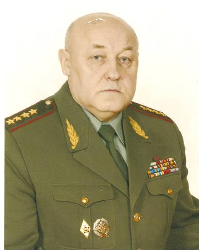

Балуевский Юрий Николаевич
(09.01.1947)
Родился на Украине в г. Трускавец в семье офицера, капитана Советской Армии Балуевского Николая Семеновича, родовые корни которого уходят вглубь веков сараевских деревень Спировской и Россоулинской. Отец прошел две войны: финскую и Великую Отечественную. После войны Николай Семенович остался служить в кадровой армии, на Украине. Семье Балуевского Н.С. приходилось жить в разных гарнизонах. После увольнения в отставку Николая Семеновича семья поселилась жить в 1953 году в Кирилловском районе Вологодской области, где сын Юрий окончил среднюю школу в 1965 году. Там начался его трудовой путь с учителя физкультуры.
В 1966 году Юрий Николаевич поступил в Высшее войсковое командное училище имени С.М. Кирова в городе Ленинграде. После успешного окончания училища началась служба в войсках в должностях командира взвода, командира роты, а затем в штабах дивизии и оперативного отдела штаба армии.
С 1976 г. Юрий Николаевич – на учебе в Военной академии имени М.В. Фрунзе. После окончания академии ответственная работа в оперативных управлениях штаба Ленинградского военного округа и Генерального штаба Вооруженных Сил СССР.
В 1990 году после двух лет учебы с отличием окончена Военная академия Генерального штаба Вооруженных Сил имени К.Е. Ворошилова. Глубокие знания, полученные в академии, опыт войсковой и штатной службы, профессионализм, а также личностные качества дали возможность генералу Балуевскому Ю.Н. достичь успехов в деятельности на должностях первого заместителя командующего Группой российских войск в Закавказье, а с 1995 года – заместителя, а затем начальника Главного оперативного управления Генерального штаба.
Особенно талант руководителя, крупного военного стратега и аналитика проявился, когда генерал-полковник Балуевский Юрий Николаевич трудился на посту первого заместителя начальника Генерального штаба. В 2004 году Юрий Николаевич Указом Президента назначен начальником Генерального штаба Вооруженных Сил России, первым заместителем Министра обороны. Ему было присвоено высокое воинское звание генерала армии. 3 июня 2008 года назначен заместителем секретаря Совета Безопасности Российской Федерации.
Более 35 лет отдано армии. Пройден трудный путь от курсанта до генерала. Вся жизнь была полностью подчинена делу и долгу. За безупречное и добросовестное служение Отечеству генерал армии Балуевский Ю.Н. удостоен многих правительственных наград. Юрий Николаевич активный член Вологодского землячества в Москве. Поддерживает тесные связи с Кичменгско - Городецким районом, где находятся его родовые отцовские корни.